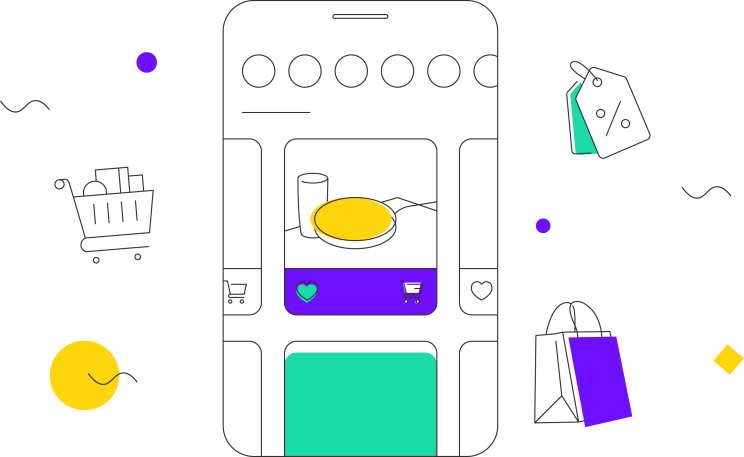
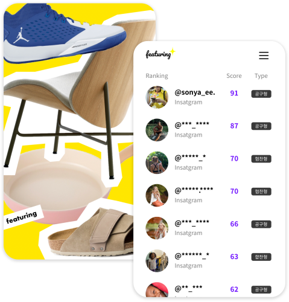
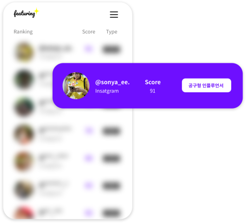
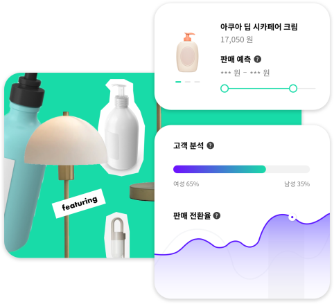

Group Buying
마켓 오픈부터 판매까지
공동구매도 피처링에서
세포마켓을 통한 매출 성장에도
예측과 전략이 필요한 법, 판매 가능성이 높은
인플루언서만 매칭해 인스타 공동구매 진행하세요.
예측과 전략이 필요한 법, 판매 가능성이 높은
인플루언서만 매칭해 인스타 공동구매 진행하세요.

GIF삽입될 영역입니다.
GIF 디자인 분위기에 따라 하단 브랜드 로고영역 사용해주세요.
GIF 디자인 분위기에 따라 하단 브랜드 로고영역 사용해주세요.
Step 1
상품만 알려주세요
이제는 대세가 된 인스타 샵,
누구와 시작할지 막막하신가요?
피처링 AI는 1억건 이상 분석된 데이터를 통해
고객님의 자사 상품과 fit이 잘 맞는 인플루언서를 찾고
판매 건수를 예측합니다.
누구와 시작할지 막막하신가요?
피처링 AI는 1억건 이상 분석된 데이터를 통해
고객님의 자사 상품과 fit이 잘 맞는 인플루언서를 찾고
판매 건수를 예측합니다.

Step 2
마켓을 오픈하세요
높은 트래픽이 확보된 브랜드 마케팅은 기본!
기존 온라인 매체 대비 10배 이상의 판매 노출로
피처링이 새로운 쇼핑창구를 만들어드립니다.
심지어 공구 진행 모두 피처링이 담당하여,
마케팅 예산에 부담이 없습니다.
기존 온라인 매체 대비 10배 이상의 판매 노출로
피처링이 새로운 쇼핑창구를 만들어드립니다.
심지어 공구 진행 모두 피처링이 담당하여,
마케팅 예산에 부담이 없습니다.

Step 3
리포트를 확인하세요
마켓 개시 전 판매 예측 분석은 물론이고,
판매가 종료된 후 최종 노출된 인스타그램 이용자 분석,
판매 전환율 등 을 제공합니다.
SNS 상품 시장을 인스타 공구로 타깃팅하고,
포지셔닝 성과로 장기적인 파트너십도 고려하세요.
판매가 종료된 후 최종 노출된 인스타그램 이용자 분석,
판매 전환율 등 을 제공합니다.
SNS 상품 시장을 인스타 공구로 타깃팅하고,
포지셔닝 성과로 장기적인 파트너십도 고려하세요.
